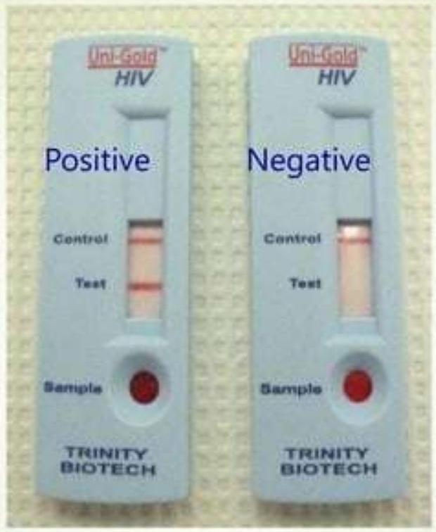
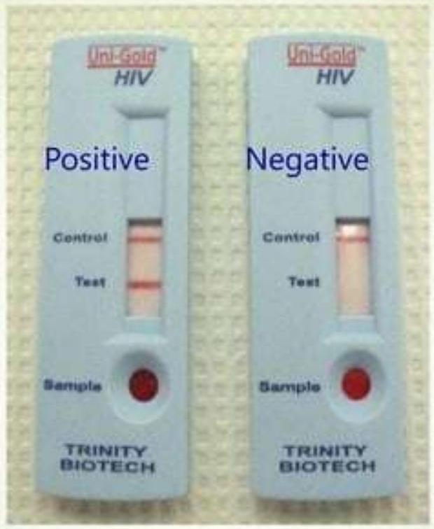

Prevention & HIV Testing Services
PREVENTION OF HIV/AIDS
- Although most STIs can be cured except HIV/ AIDS , it is more cost effective to prevent them
- Community education on the risk factors and promotion of behavior change in prevention and control of STIs and HIV are important.
- HIV/AIDS/STIs prevention measures revolve around intervention on sexual behavior of individuals.
- Various intervention measures are needed to control the spread of HIV/AIDS/STIs
HIV/AIDS Prevention Strategies
- Despite many years of research, there is no cure for AIDS.
- Hope for fighting the scourge continues to be in prevention of transmission.
- Preventive strategies are therefore aimed at curtailing transmission via known routes of transmission
Prevention Strategies
Primary Prevention Strategies (activities)
Primary prevention strategies seek to prevent transmission of HIV to individuals who are not infected yet. The measures include;
- Sexual behavior change - promoting the adoption of safe sex practices
- Condom promotion and availability
- Early treatment of Sexually Transmitted Infections
- Voluntary Counseling and Testing of HIV
- Voluntary male circumcision
- Prevention of mother to Child Transmission
- Blood Safety, screening for HIV
- Stigma reduction through attitude change
- Harm reduction for Injecting drug users
- HIV prophylaxis - PEP and PreP
Secondary Prevention Strategies
Secondary prevention strategies target persons who are HIV positive to become partners in the fight to prevent spread of HIV to the general population. This is a holistic approach that involves physical, social, psychological and spiritual interventions. The strategies include;
- Attitude change - by linking the newly diagnosed to support groups
- The provision of care for sexually transmitted diseases to PLWHA
- The provision of Anti-Retro viral medications
- Provision of care for opportunistic infections
- Reducing fertility. This alludes to encouraging women who have the infection not to have children
- Prevention with positives - involving HIV patients in HIV advocacy
- Health promotion strategies must be pursued aggressively
The ABCD of HIV Prevention
- A - Abstinence
- B - Be faithful to one partner with known HIV Status
- C - Correct and consistent condom use
- D - Delayed Sexual Debut
Barrier Methods and Dual Protection
- Both male and female condoms, used correctly and consistently can provide protection against STIs, reduce the risk of HIV transmission and also prevent unintended pregnancy.
- Dual protection is the use of one or more methods of contraception that prevent STIs, including HIV and unintended pregnancies. Examples include: birth control pills would be a single method while use of birth control pills and Barrier protection (condoms) would be dual protection.
- The use of dual protection by HIV -infected couples can also protect then from re- infection with variant strains of HIV and effectively help to space their children.
PMTCT (Prevention of Mother-to-Child Transmission)
- Stands for prevention of mother-to-child transmission of HIV
- Mother to child transmission (MTCT) of HIV may occur at any stage during pregnancy, labour and delivery, or breastfeeding
PMTCT can be achieved by:
- Use of antiretroviral therapy (ART) - PreP and PEP
- Appropriate infant feeding practices
- Safe obstetrical practices
- Mother to child transmission (MTCT) of HIV infection during pregnancy, labour and delivery or through breastfeeding is also refer to as vertical or perinatal transmission.
- The overall MTCT rate is approximately $40 \%$ without intervention.
Maternal factors that may increase the risk of HIV
| Pregnancy | labour and delivery | Breastfeeding |
|---|---|---|
|
i. High maternal viral load ii. Viral or bacterial infection iii. STIs iv. Maternal malnutrition v. Anemia |
i. High maternal viral load ii. Ruptured of membranes iii. Invasive delivery procedures iv. External cephalon version v. Premature delivery vi. Low birth weight vii. Broken skin |
i. High maternal viral load ii. Duration of breastfeeding iii. Mixed feeding (food or fluids) iv. Breast abscesses v. Poor maternal nutrition status vi. Oral disease in the baby |
Elements of comprehensive PMCTC approach
- Element 1: primary prevention of HIV infection
- Element 2: Prevention of unintended pregnancies among women infected with HIV
- Element 3: Prevention of HIV transmission from women infected with HIV to their infants
- Element 4: Provision of treatment,care, and support to women infected with HIV, their infants and their families
Feeding Options in PMTCT
Feeding options: exclusive breastfeeding for 6 Months
Benefits of breastmilk;
- Easily digestable and has all the nutrients and water they need.
- Available
- Protects infants against diarrhea and pneumonia
- Improves brain growth
- Gives close contact
- Lowers risk of passing HIV
- Reduces the mother from getting breast cancer
Other methods of feeding
- Exclusive breast feeding and early cessation. There is replacement feeding.
- Wet nursing (to breastfeed another's child)
- Expressing and heat treatment of milk
Other Prevention Methods
Voluntary Medical Male Circumcision (VMMC)
- This is complete removal of the foreskin of the skin penis by surgical means.
- Though VMMC may be conducted for a number reasons, evidence from research has shown that medical male circumcision can significantly reduce (but not eliminate) men's risk of acquiring HIV through sex.
- HIV prevalence in uncircumcised men ( $16.9\%$ ) was five times higher than that of circumcised men ( $3.1\%$ ). Among men who had sex across all age groups, HIV prevalence was approximately seven times higher among uncircumcised men ( $22.5\%$ ) compared with those who were circumcised ( $3.4\%$ ).
Pre-exposure Prophylaxis (PreP)
Write short notes on this
- Pre-exposure prophylaxis (PrEP) is the administration of antiretroviral therapy to HIV- uninfected persons to reduce their chance of acquiring HIV.
Post Exposure Prophylaxis (PEP)
(Concept mentioned in Primary Prevention Strategies: HIV prophylaxis - PEP and PreP)
Overview of HIV Testing and Counselling (HTC)
HIV testing provides:
- Information about HIV status
- Opportunity to identify persons with HIV and empower them to live normal life
- Opportunity to identify persons who are HIV negative and empower them to remain negative
Definitions
- HIV testing: process of determining if client is infected with HIV
- HIV counselling: confidential dialogue between an individual or a couple and a healthcare worker (HCW) to help clients examine their risk of acquiring or transmitting HIV
- HIV counselling is tailored to the risk behaviour, circumstances and special needs of the client
Guiding Principles in Counselling and Testing
- Confidentiality
- Keeping private information shared between HCW and client
- It is an essential element in establishing and maintaining client trust
- Informed consent
- Process during which clients receive clear and accurate information about HIV testing to make an informed decision about whether to accept or decline testing
- Consent may be written or oral
- The client must give informed consent before being tested
- Post-test support and services
- Provide both HIV-negative and HIV-positive clients with test results and counselling
- Inform client that follow-up treatment, care, support are available, including support for disclosure when needed
Approaches to HIV Testing
There are two basic approaches to HIV testing:
- Provider-initiated
- Client-initiated
Both approaches include
- Basic information about providing HIV testing
- Risks and benefits of testing
Provider-Initiated Approach
- Also referred to as "opt-out"
- All clients provided with pre-test information
- Testing is still voluntary under the providerinitiated approach

Client-Initiated Approach
- Client specifically requests HIV test
- Also referred to as "opt-in"
- Only clients who specifically request to be tested are provided with HIV testing
- Client gives verbal or written consent
Counselling Skills
Role of the HCW in Counselling
Role of Counsellor: to support and assist client's decision-making process by:
- Listening to client
- Understanding the choices client needs to make
- Helping client explore her/his circumstances and options
- Helping client develop self-confidence to carry out her/his decision about testing
Counsellor is not responsible for:
- Solving all of the client's problems
- The client's decisions
Active Listening
Active listening helps establish a trusting relationship with the client. It involves:
- Listening to and understanding the client
- Taking note of client's non-verbal behaviour
- Listening for client's social and cultural context
- Listening to client's negative comments or feelings-make note of things that may have to be challenged
Non-Verbal Communication (ROLES)
| R | A relaxed and natural attitude with clients |
| O | Open posture should be adopted-it shows that you are open to the client and to what client is saying |
| L | Leaning forward toward the client is a sign of involvement |
| E | Maintain culturally appropriate eye contact |
| S | Sit squarely facing client to show involvement |
Listening and Learning Skills
Skill 2: Ask open-ended questions
- Open-ended questions begin with "how?" "what?" "when?" "where?" or "why?"
- Encourages responses that lead to further discussion
- Try to avoid questions with a "yes" or "no" answer
| Closed-ended | Open-ended |
|---|---|
| You know what HIV is, don't you? | What is HIV? |
| Do you have any other questions about MTCT? | What other questions do you have about MTCT? |
| Are you going to tell your partner about your HIV test result? | Who are you going to tell about your HIV test result? |
| Is your husband your only partner? | How many partners have you have in the last 3 months? |
| Do you plan to replacement feed? | How do you plan to feed your baby? |
Skill 3: Use gestures and responses that show interest
- Gestures: nodding and smiling
- Responses: "Mmm," "Aha"
- Attending skills: clarifying and summarizing-invite client to relax, talk about herself and her problems
Skill 4: Reflect back what the client says
- Encourages client to say more
- Shows HCW is actively listening, encourages dialogue, gives HCW opportunity to better understand client's feelings
- Say what client said in a slightly different way
Skill 5: Empathize-show you understand how she feels
- Used in response to an emotional statement
- Encourages mother to discuss the issue further
- If client says, "I just can't tell my partner that I have HIV," HCW could respond with "You sound like you are afraid to tell your partner your HIV test result"
Skill 6: Avoid words that sound judging
- Words like: right, wrong, well, badly, good, enough, properly
- Using these words may make client feels she is wrong, or that there is something wrong with her baby
Common Mistakes in Counselling
- Controlling the discussion
- Judging the client
- Preaching to a client
- Labelling a client instead of finding out their individual motivations, fears or anxieties
- Reassuring a client without knowing
- Not accepting the client's feelings
- Advising before client has arrived at a personal solution
- Interrogating
- Encouraging dependence
- Persuading or coaxing
Pre-test Information and Counselling
The purpose of the pre-test session is to provide the client or couple with adequate information to make an informed decision about HIV testing

Objectives and components of the pre-test session:
- Help client understand HIV
- Explain importance and benefits of HIV testing
- Explain HIV testing procedures
- Explain importance of partner testing, discordance, disclosure
- Explain risk reduction and available services (sexual, MTCT) and provide referrals
- Encourage continuous healthcare attendance (ANC and post-delivery)
Delivery of Pre-test Information
Pre-test session models:
- Group information
- Individual counselling
- Couple counselling
Couple Pre-test Session
Advantages of couple counselling:
- Partners hear messages together $\rightarrow$ shared understanding
- Environment is safe to discuss concerns
- HCW can ease tension and diffuse blame
- Post-test counselling messages reflect the test results of both partners
- Neither is burdened with disclosure or partner referral
- Facilitates risk reduction such as condom use
- Prevention (including PMTCT), care and treatment decisions can be made together
Overview of HIV Testing Technologies
HIV tests detect antibodies or antigens associated with HIV in whole blood, saliva, or urine
- Blood sampling is the most common method of testing
- HIV tests are very accurate

Significance of HIV Testing
- Helps individuals know their HIV status
- Helps prevent the spread of HIV - persons who know their status are better informed on preventive measures
- Helps assess the prevalence of HIV in general population
- Facilitates initiation of HIV management in infected persons
- Helps monitor the effectiveness of ARVs (by testing for CD4 and viral load)
HIV Rapid Tests (Antibody Tests)
- After infection with HIV, the body makes antibodies to fight the virus
- It may take 4 to 6 weeks, but occasionally up to 3 months for antibodies to become detectable in the blood
- During this time, a person can still transmit the virus to others
- Rapid HIV tests are the most common tests in VCT and PMTCT settings
Examples;
- Western blot
- Determine
- Unigold
- Genie II
- Hema-strip
- Ora-Quick
Features:
- Accurate results within 20-40 minutes
- Can be done in the clinic setting
- Accurate when performed correctly
- Usually performed on serum or whole blood (by fingerprick or venous sample); some rapid HIV tests use saliva
- No batching required
- HCWs can be trained to perform the tests
- Usually do not require special equipment, electricity or refrigeration

Interpreting Rapid Test Results
- Reactive or "Positive"
- Test band
- Control band
- Non-reactive or "Negative"
- Control band only
- Invalid
- No control band present
- Test has failed. Repeat with new device.
A positive HIV test means that antibodies to HIV are present. It does not mean that the client has AIDS
A negative HIV test can mean:
- The person is not infected with HIV, or
- The person is infected with the virus but is in the window period
A negative test does not mean that person cannot become infected. There is no such thing as immunity to HIV infection
Rapid HIV Testing Algorithms
1. Serial testing
- Blood sample taken and tested once
- If first test result is non-reactive, result is given to client as HIV-negative
- If first test result is reactive, blood sample is tested again using different brand of rapid test
- If second test is reactive, result is reported as HIV-positive
- If second test is negative, a third test known as a "tiebreaker" is performed

2. Parallel testing
- Two HIV tests are performed on same sample at the same time, e.g., in parallel
- If both are non-reactive, client reported HIV-negative
- If both are reactive, client reported HIV-positive
- If one is reactive and the other non-reactive, a "tiebreaker test" is performed

HIV Rapid Tests: Advantages vs Disadvantages
| Advantages | Disadvantages |
|---|---|
|
i. Rapid tests increase access to HIV prevention (VCT) and interventions (PMTCT) ii. Supports increased number of testing sites iii. Same-day diagnosis and counseling iv. Robust and easy to use v. Test time under 30 minutes vi. Most require no refrigeration vii. None or one reagent viii. Minimal or no equipment required ix. Minimum technical skill x. On-site testing and same day results xi. Lower risk of administrative error xii. Widely accepted by clients xiii. Fewer resources required |
i. Only a few tests can be done concurrently ii. Need for quality assurance/quality control at multiple sites iii. Test performance varies by product iv. Refrigeration required by some products, e.g., Capillus v. There may be reader variability in interpretation of results vi. Limited end-point stability of test results (results may appear different after some time) |
Non-rapid Tests (HIV Viral Tests)
- Viral tests detect the presence of HIV in blood
- Viral tests are performed by trained personnel in the laboratory
There are two types of viral tests:
- p24 antigen test: measures one of the HIV proteins used for screening blood and for infant diagnosis
- PCR (polymerase chain reaction) tests:
- DNA PCR detects presence of HIV in blood and is used for infant diagnosis
- RNA PCR detects and measures amount of virus in blood (viral load)
CD4 T-Lymphocyte Counts
CD4 T-lymphocyte counts used for:
- Determining clinical prognosis
- Assessing criteria for antiretroviral therapy
- Monitoring therapy
Viral Load Test
- The viral load test measures amount of HIV in blood
- Used to:
- Predict disease progression
- Assist with deciding when to initiate anti-retroviral therapy
- Monitors response to anti-retrovirals
Discordant couple
- Refers to situation where one of the sex partners is HIV positive whereas the other one is HIV negative.
- The HIV negative partner is at risk for HIV acquisition and so requires a coupe specific HIV prevention package
- In line with the WHO guidelines, the HIV negative client should be retested 4 weeks after initial testing then after 6 months and thereafter annually
Post-test Counselling
- All HIV test results, whether positive or negative, must be given in person, privately (as a single client or couple)
- Put the client or couple at ease
- Where possible, provide a quiet and private room for the discussj
- Ideally, the same HCW who conducted the pre-test session will also conduct the post-test session
 

When Client Tests HIV-negative
Objectives of the post-test session:
- Provide HIV test result and assess understanding of result
- Identify and address client questions
- Discuss:
- Partner HIV testing and disclosure
- Safer sex and risk reduction
- Exclusive breastfeeding
- Antenatal care, post-delivery care
- Importance of delivering in a healthcare facility
- Infant care
- Provide referrals, take-home information
When Client Tests HIV-positive
- Client reactions to results can range from acceptance to disbelief
- Remain non-judgemental, supportive and confident throughout the counselling process
- Encourage client to return for visits and follow-up HIV post-test counselling
Objectives of the post-test session:
- Same as for post-test session when client tests HIV-negative, but counselor should additionally discuss:
- ARV therapy or prophylaxis
- Infant feeding options
- Treatment and support services for client and family
Disclosure of HIV Status
- Disclosure is informing others of a test result
- Clients who disclose are in a better position to:
- Encourage partner(s) to be tested
- Prevent transmission of HIV to partner(s)
- Access PMTCT interventions
- Receive support from partner(s) and family
It is important to respect client's choice regarding timing and process of disclosure